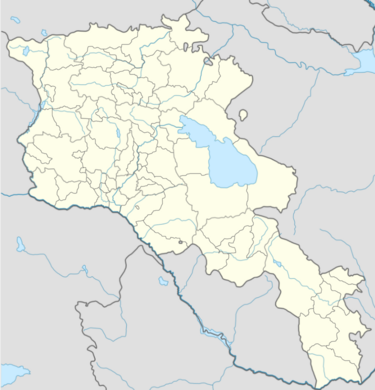
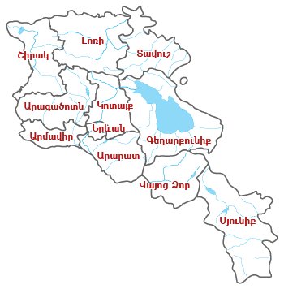

Հայաստանի վարչատարածքային միավորներն են մարզերը և համայնքները։
Վարչատարածքային բաժանումը, Կառավարության ներկայացմամբ, սահմանվում է օրենքով։
Համայնքը կարող է ընդգրկել մեկ կամ ավելի թվով բնակավայրեր։
Կառավարությունը մարզերում իր տարածքային քաղաքականությունն իրագործում է մարզպետների միջոցով։
Մարզպետներին նշանակում և ազատում է Կառավարությունը։
Մարզպետները համակարգում են պետական կառավարման մարմինների տարածքային ստորաբաժանումների
գործունեությունը,
բացառությամբ օրենքով սահմանված դեպքերի։
Երևանում տարածքային կառավարման առանձնահատկությունները սահմանվում են օրենքով:
Մարզերում իրականացվում է պետական կառավարում,
իսկ համայնքներում՝ տեղական ինքնակառավարում՝ Հայաստանի սահմանադրությամբ և
«Տեղական ինքնակառավարման մասին» օրենքով սահմանված կարգով։

Մարզեր

Հայաստանի վարչատարածքային միավորներն են մարզերը և համայնքները։
Վարչատարածքային բաժանումը, Կառավարության ներկայացմամբ, սահմանվում է օրենքով։
Ստորև ներկայացվում է Հայաստանի մարզերի ցուցակն՝ աղյուսակի տեսքով։
Ներառված են տվյալները տարածքի մակերեսի, բնակչության թվի և տարաբնակեցման խտության՝ 2011 թվականի
դրությամբ։
Մարդահամարի տվյալները վերցված են Հայաստանի Հանրապետության պետական վիճակագրական ծառայության
պաշտոնական
կայքից
Գեղարքունիք մարզի տարածքի մեջ ներառվել է Սևանա լճի ջրային մակերեսը, որը կազմում է 1278 կմ2։
Երևան
Հայաստանի մայրաքաղաքը Երևանն է։
Երևան քաղաքը Հայաստանի վարչատարածքային բաժանման բնակչությամբ ամենամեծ միավորն է:
Մայրաքաղաք Երևանում իրականացվում է տեղական ինքնակառավարում, որի մարմիններն են Երևանի ավագանին և
քաղաքապետը։
Ըստ 1995 թվականի Հայաստանի սահմանադրության,
Երևանի քաղաքապետը նշանակվում էր վարչապետի ներկայացմամբ նախագահի հրամանագրով,
սակայն ըստ սահմանադրության 2005 թ. փոփոխությունների,
Երևան քաղաքում տեղական ինքնակառավարման առանձնահատկությունները սահմանվում են
«Երևան քաղաքում տեղական ինքնակառավարման մասին» օրենքով։
Համաձայն Հայաստանի գործող Սահմանադրության 06.12.2015 թ. փոփոխություններով՝
«Երևանը համայնք է։
Երևանում տեղական ինքնակառավարման առանձնահատկությունները սահմանվում են օրենքով» ։
Երևան քաղաքի ավագանին բաղկացած է 65 անդամից և ընտրվում է
Երևան քաղաքի բնակիչների կողմից՝ համամասնական ընտրակարգով։
Երևանի քաղաքապետ է ընտրված համարվում այն կուսակցության
ընտրական ցուցակի առաջին համարը, որը ստացել է ավագանու տեղերի 40 տոկոս և ավելին։
Եթե այդպիսի կուսակցություն չկա, ապա քաղաքապետն ընտրվում է ավագանու կողմից։
Երևանն իր հերթին բաժանված է 12 վարչական շրջանների։
Դրանք են Աջափնյակ, Ավան, Արաբկիր, Դավթաշեն, Էրեբունի, Կենտրոն,
Մալաթիա-Սեբաստիա, Նոր Նորք, Նորք Մարաշ, Նուբարաշեն, Շենգավիթ,
Քանաքեռ-Զեյթուն։